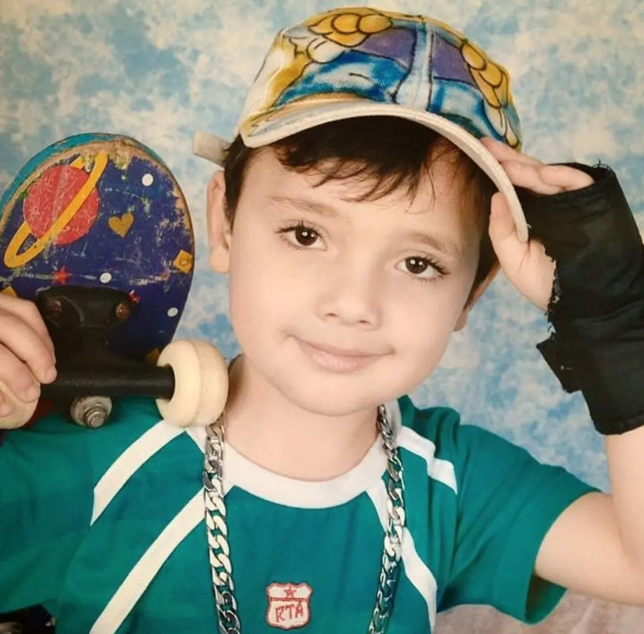

Oi prazer eu sou o Thomas, tenho 18 anos faço algumas coisas da minha vida como hobbies e estudos.
Meus principais hobbies são jogar alguns jogos por exemplo pokemon competitivo e alguns jogos
de tiro,luta ou jogos de gerenciamento alguns exemplos de cada tipo são CS2,STF6 e Oxygen Not Included. Meus gostos musicais são bens variados,
curto rock,hip-hop (todos os generos dentro dele em geral) alguns MPBl. Atualmente eu trabalho numa rede de restaurantes, famosa que é o Outback
lá eu trabalho como buss (auxiliar de limpeza) porém eu pretendo subir para area de t.i. na propria empresa.
Falando agora sobre meus sonhos eu prentedo ter uma casa um carro e uma familia estavel logico que o pix é realmente necessario pra isso mas até lá eu vou me virando
com oque eu tenho e com oque eu vou conseguir a partir dos conhecimento que eu for conseguindo através do curso,
eu adoro cachorros então eu pretendo ter um dogue alemão,são bernado ou um husky siberiano
depende do que
eu vou mais gostar daqui pra frente mas provalvelmente um dogue alemão
Meus objetivos de carreira são quase os mesmo da maioria, conseguir uma grana boa até eu ganhar 5k apenas por existir com algum investimento meu de renda passivo
porém eu sei que até lá vai ter chão, por enquanto pretende subir dentro do outback e entrar na area de t.i. logico porém até eu subir tenho que passar por alguns processos pelo que eu me informei,
até então venho desenvolvendo um projeto pessoal sobre carreiras e um desses projetos é eu me organizar e arrumar meu perfil no linkedin e no github também